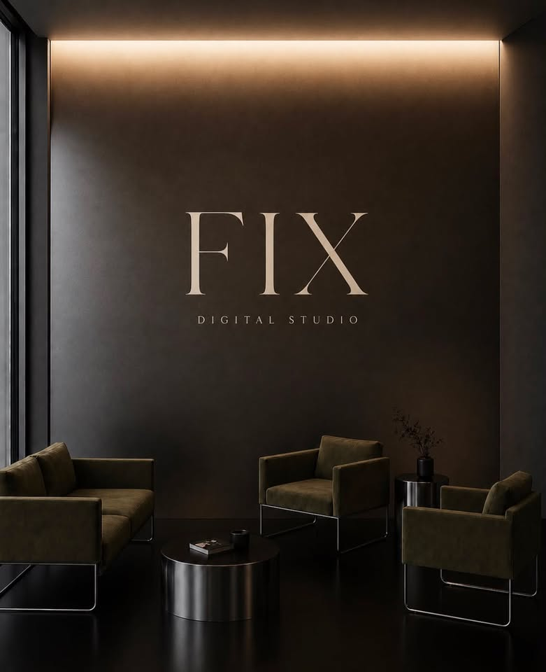
Est. 2026
Espacios digitales, construidos con intención.
FIX es un estudio digital. Diseñamos sitios web y experiencias para negocios que entienden que la forma en la que se presentan importa tanto como lo que ofrecen.
Conocer FIXFilosofía
Una página no debería simplemente existir. Debería representar lo que hay detrás de ella.
Creemos que un sitio web es la primera conversación entre una marca y las personas que aún no la conocen. Por eso no partimos de plantillas: partimos de lo que hace distinto a cada negocio, y construimos alrededor de eso.
Diseño, tipografía, ritmo, espacio. Cada decisión responde a una razón concreta — nunca a una costumbre.
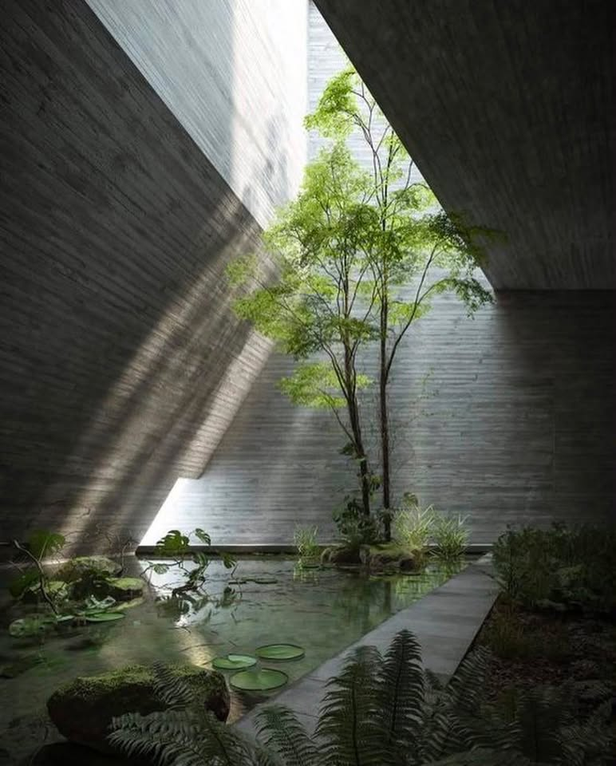
Servicios
Cuatro formas de empezar.
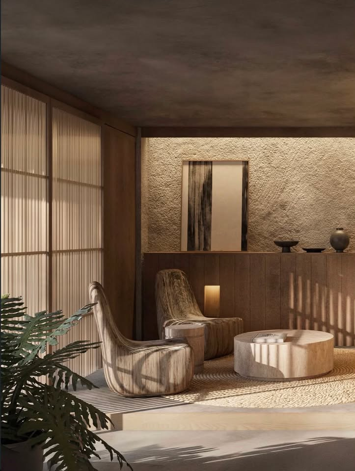
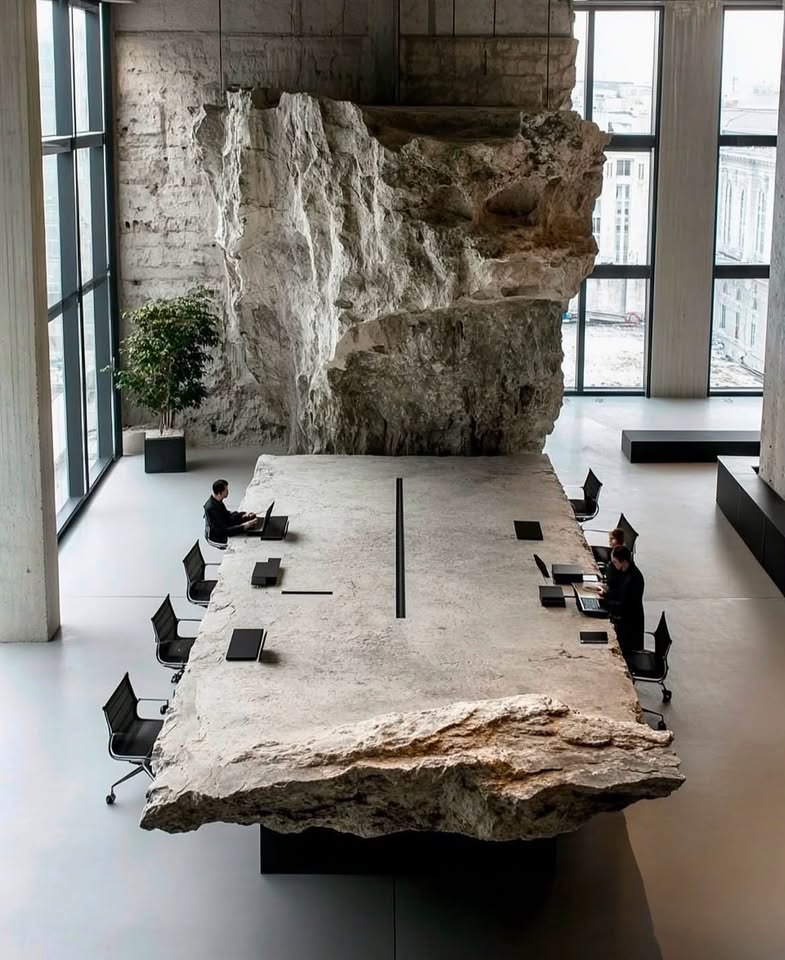
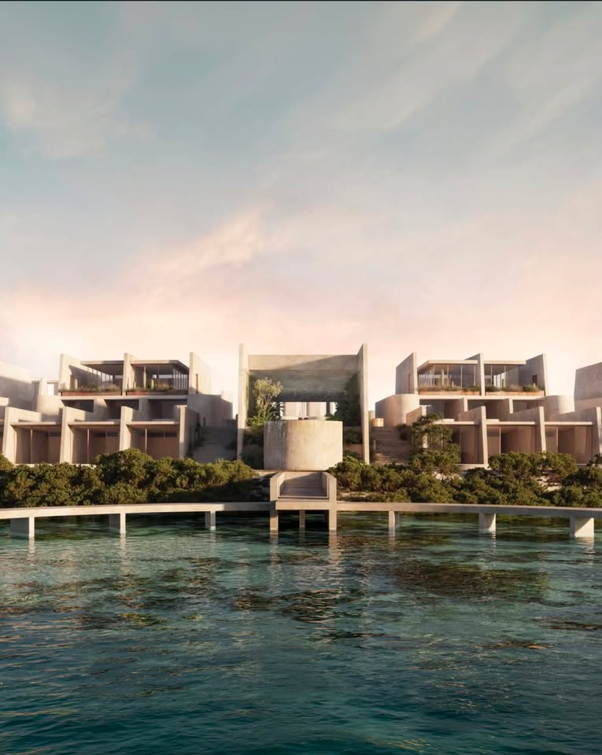
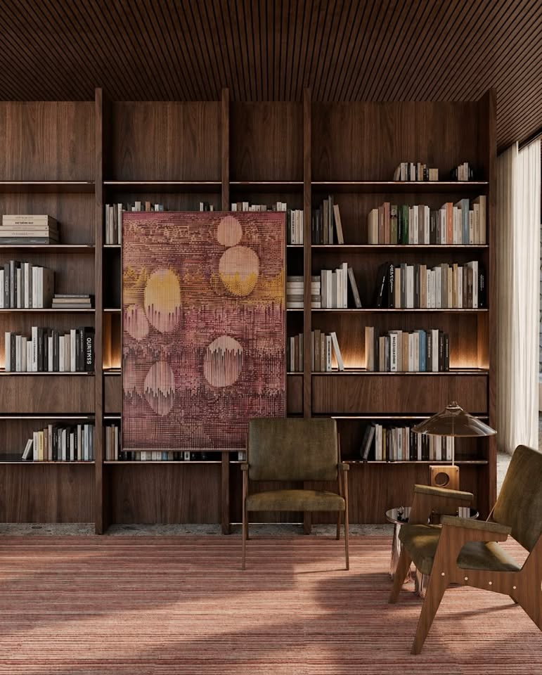
Una base sólida, bien construida desde el primer día. Pensado para negocios que necesitan una presencia clara, cuidada y lista para crecer.
- Diseño a medida, no una plantilla
- Estructura pensada para tu negocio
- Optimizado para móvil
- Dominio personalizado
Para quién: negocios que están comenzando su presencia digital y quieren hacerlo bien desde el inicio.
Mayor profundidad visual e interacción. Un sitio que se mueve, responde y se siente construido con más capas de detalle.
- Animaciones e interacción a medida
- Composición y navegación más elaboradas
- Personalización visual ampliada
Para quién: marcas con una identidad definida que buscan una experiencia más rica.
Libertad creativa y funcional completa. Sin límites de plantilla ni estructura predefinida — construido desde cero alrededor de tu proyecto.
- Concepto y dirección de arte propios
- Funcionalidad e interacción avanzadas
- Acompañamiento cercano durante todo el proceso
Para quién: proyectos ambiciosos que necesitan una experiencia completamente propia.
Un sitio bien hecho también necesita cuidado. Actualizamos, ajustamos y hacemos evolucionar tu página después del lanzamiento.
- Actualizaciones de contenido e imágenes
- Ajustes y mejoras continuas
- Acompañamiento después del lanzamiento
Para quién: quienes ya tienen su sitio con FIX y quieren mantenerlo vivo.
Studio
Qué tipo de sensibilidad tiene FIX.
Una dirección visual clara: materiales, arquitectura, tipografía y luz. Explora el universo del que parte cada sitio que construimos.
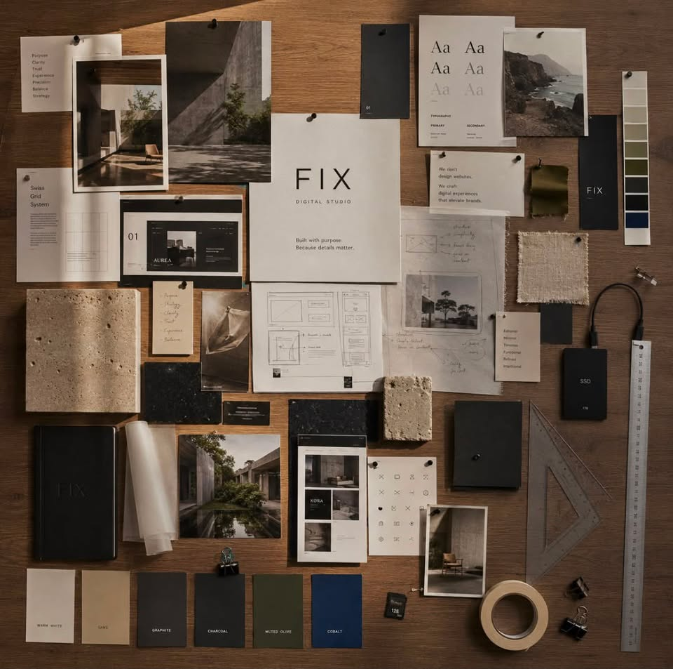
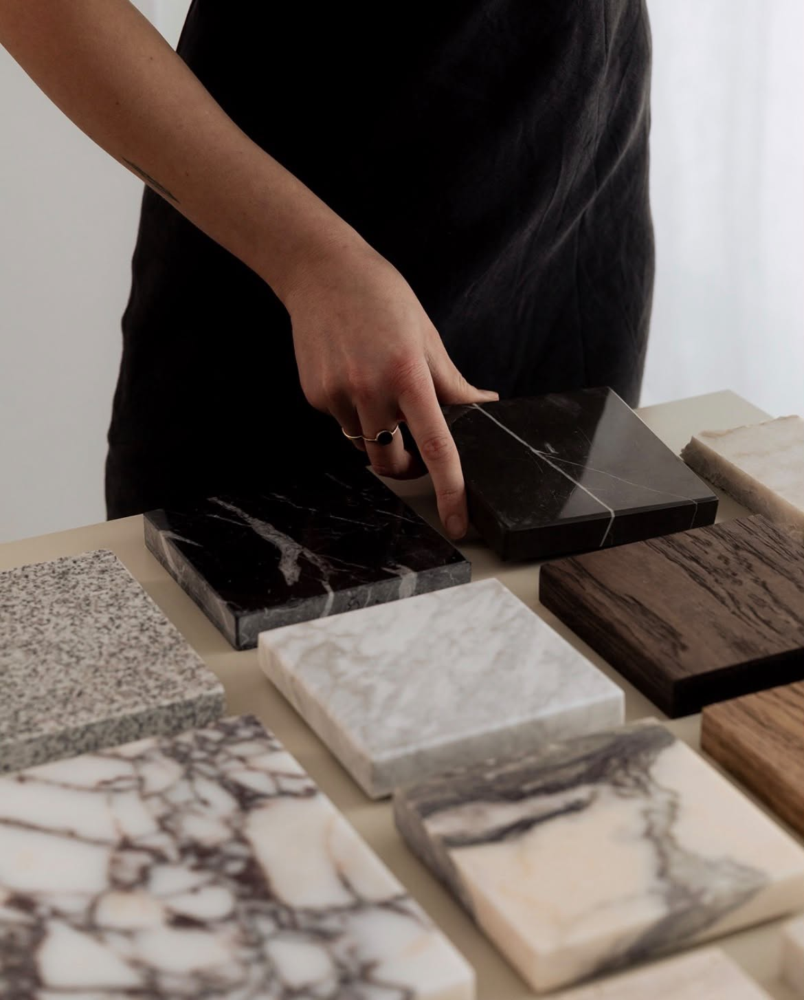
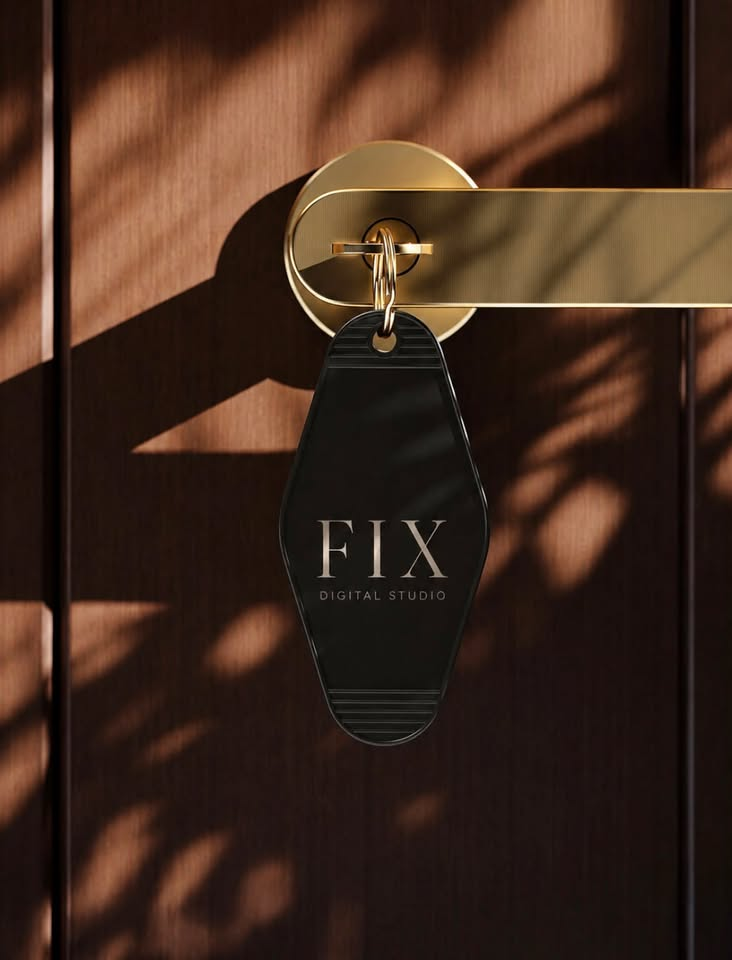
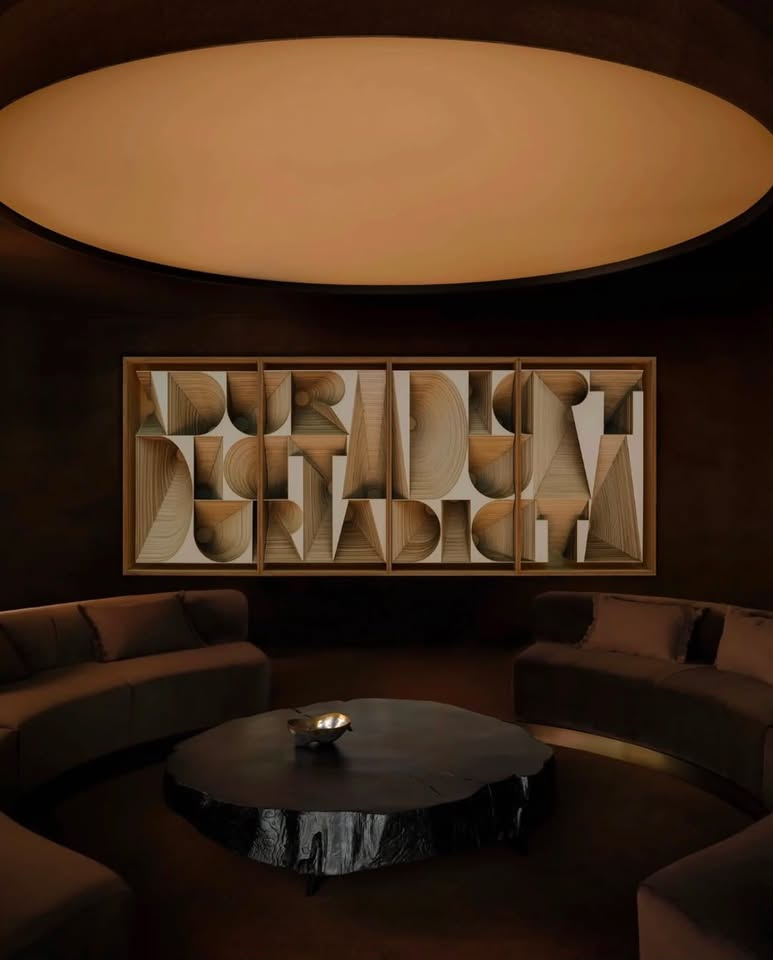
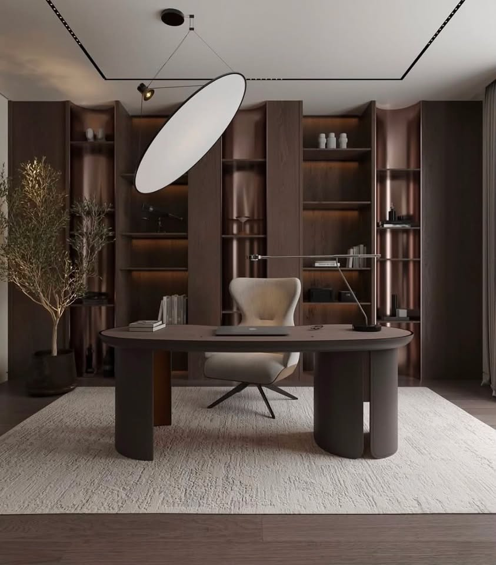
Proceso
Cómo trabajamos.
Escuchamos qué necesita tu negocio y cómo quiere ser percibido antes de proponer nada visual.
Trazamos la dirección visual y de contenido: qué debe transmitir el sitio y en qué orden.
Diseñamos y desarrollamos el sitio completo, con atención al detalle en cada sección.
Revisamos, ajustamos y pulimos antes del lanzamiento — y seguimos disponibles después.
Preguntas frecuentes
Antes de escribirnos.
Sí. Somos un estudio joven, y precisamente por eso cuidamos cada proyecto con especial atención: mantenemos comunicación clara durante todo el proceso a través de Instagram.
Todo comienza con una conversación por Instagram. A partir de ahí entendemos tu negocio, definimos el enfoque y construimos el sitio siguiendo nuestro proceso de cuatro etapas.
Nos ayuda contar con tu logo o marca (si ya existe), fotografías propias si las tienes, y una idea general de lo que quieres comunicar. Si no tienes todo eso, lo resolvemos juntos.
Sí. El proceso incluye una etapa de refinamiento pensada exactamente para eso: ajustar el sitio hasta que se sienta correcto.
Te respondemos por Instagram para conocer tu proyecto y ver si somos el estudio correcto para construirlo contigo.
Sí, para eso existe Mantenimiento: una forma de seguir ajustando y evolucionando el sitio después del lanzamiento.
Sí. Muchos proyectos empiezan en Sencillo y crecen hacia Avanzado o Max con el tiempo. El sitio puede evolucionar contigo.
Trabajamos mejor con negocios y marcas que valoran el diseño y quieren una presencia digital con criterio propio, sin importar el tamaño del proyecto.
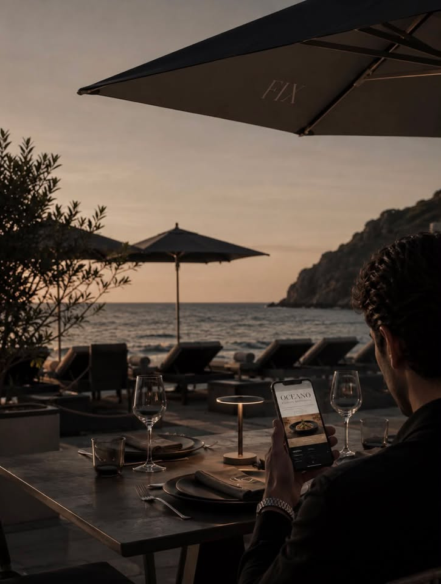